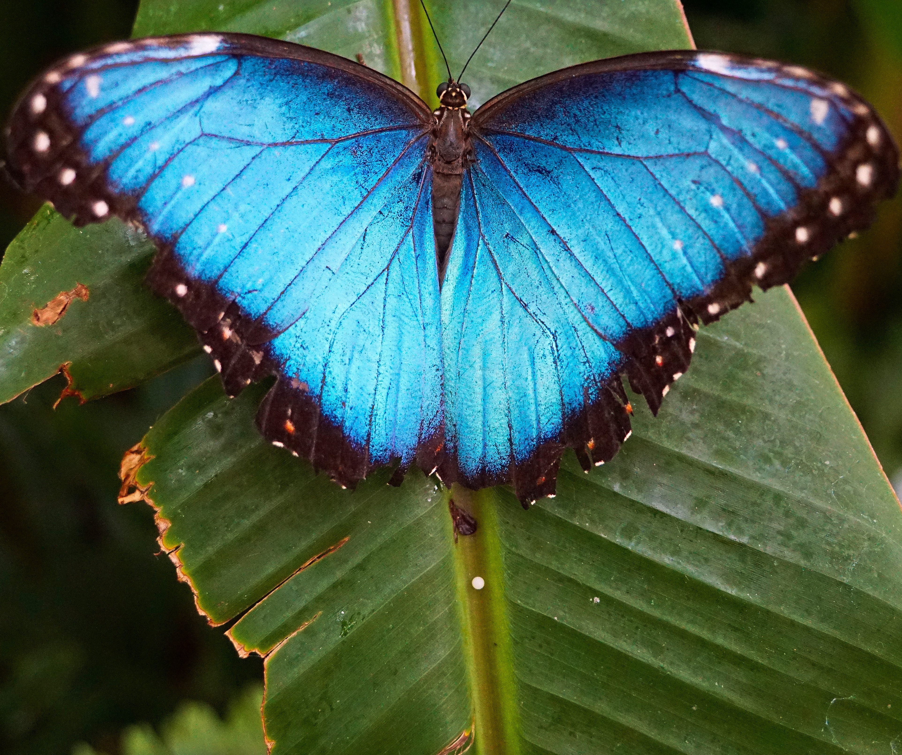
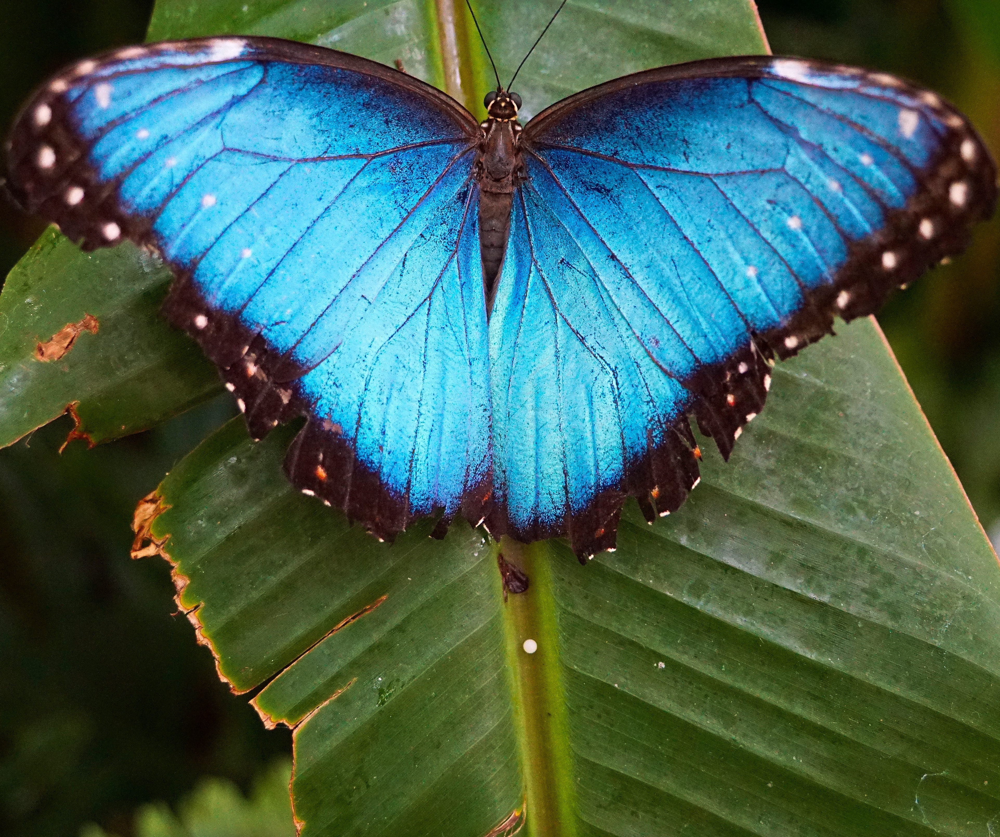
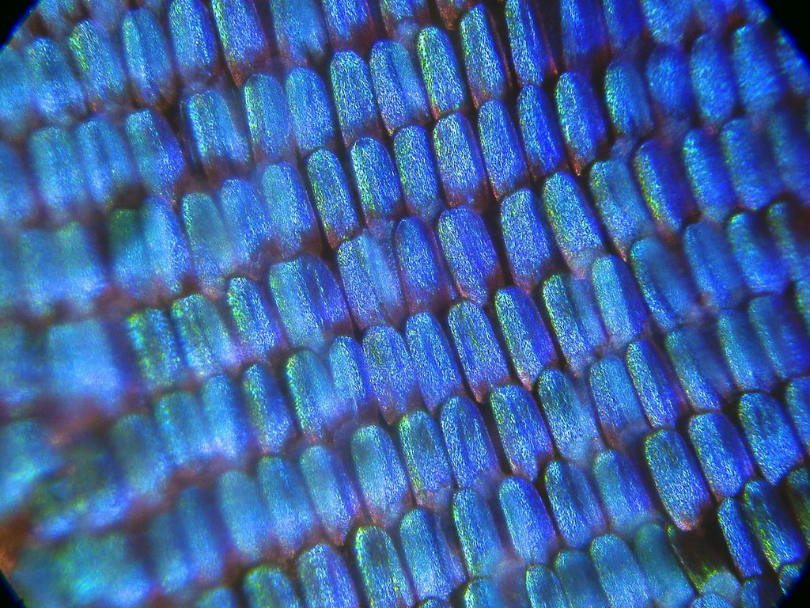
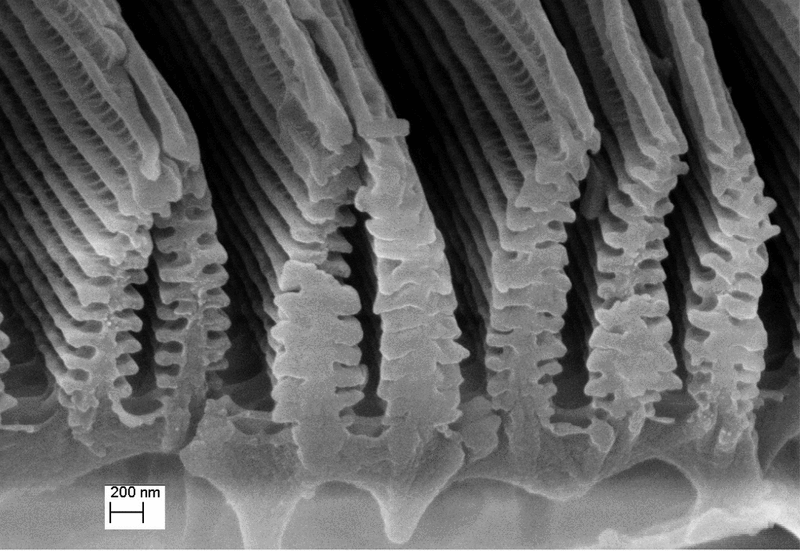

feeling blue?
entry 02: rising action
From last week, I've learnt that objects contain pigments: organic molecules that absorb every color except the one that we see. The color they reflect is the color the object appears to be. In the natural world, though, animals don't make these pigments from scratch: they're made from ingredients in our diet (You are what you eat?). Flamingoes, for example, are born grey. They turn pink because of the carotenoids in their diet from the crustaceans they eat. This reigns true for reds, browns, oranges, yellows, and browns. And for plants, greens. But not so for blue.
 

If you've ever observed these blue morpho butterflies, you'll notice the beautiful hues and iridescence of their wings. This iridescence occurs because there's no blue pigment in these butterflies (and other animals exhibiting an outward blue colour)
...So they're blue, but not really blue. In fact, many of the natural blues seen in nature are made from structural colour: microscopic structures that interfere with light to reflect color back to our eyes. Going further with our butterfly example, if you microsopically zoom into a butterfly's wing scale, you'd see little ridges. If you slice across the scale, and look even closer, you'd see that the ridges are shaped like tiny Christmas trees.
 
The arrangement of these ridges is what gives blue morpho butterflies their distinct, iridescent hue. When light comes in, some bounces off the top surface. Some light waves pass into the layer and reflect off the bottom surface. For most colours of light, waves reflecting from the top and bottom will be out of phase, and will cancel each other out. That light is removed. Blue light has just the right wavelength, and its reflected waves are in sync. This color makes it to our eye, making the butterfly appear blue. This hall of mirrors only lets blue light escape. It even has a pigment at its base that further absorbs stray red and green light to make the blue purer.

So that's how we get this awesome, iridescent blue: the structure of the wing itself. All through the way light bends when it moves from air into another material.
Other artifacts from the natural world that also appear blue: blue eyes, bird feathers, etc also contain these microscopic structures. They're just arranged and bound together differently, giving a slightly different sheen to each living thing. All of them add and subtract light waves thanks to their internal structures, not due to their pigments.
No vertebrate, not a single bird or mammal or reptile that we know of, makes a blue pigment on its body. In fact, there's only one butterfly that's cracked the code for producing a true, blue pigment: the Obrina olivewing. Making blue one of the rarest colors in the natural world.